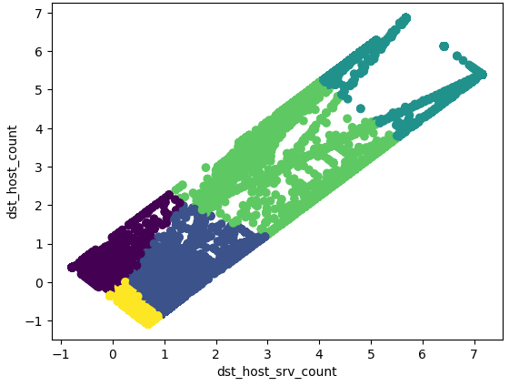
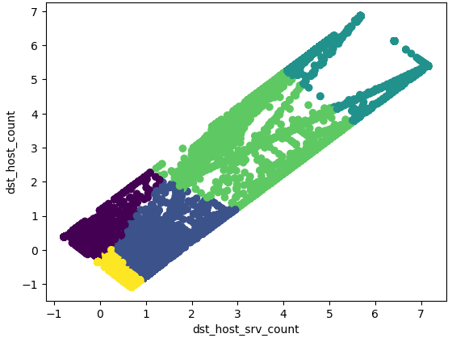
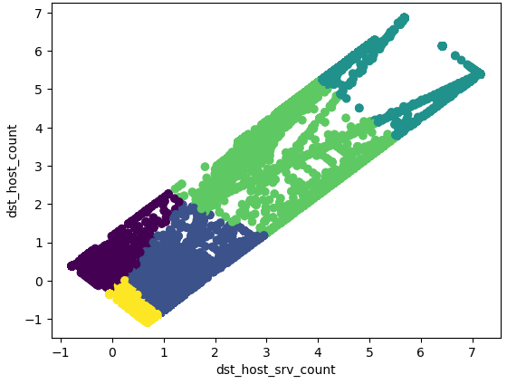
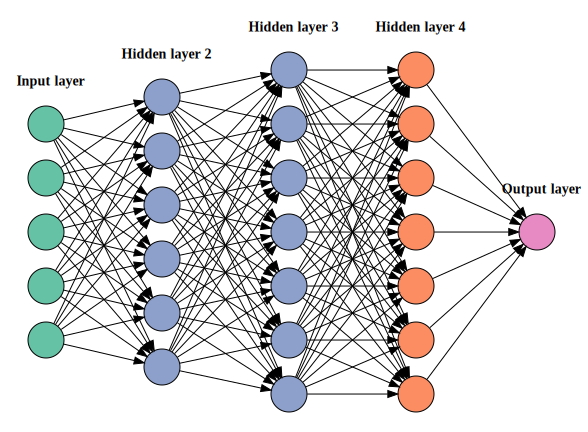

Supervised and Unsupervised Neural Networks
This project classifying anomalis to identify similarities and potential patterns of normal behaviour in the network data. The code for the project is found in the repo
 

This project classifying anomalis to identify similarities and potential patterns of normal behaviour in the network data. The code for the project is found in the repo

For this project, neural networks was trained in the domain of detecting intrusions in network data. The code for the project is found in the repo./[repo]
